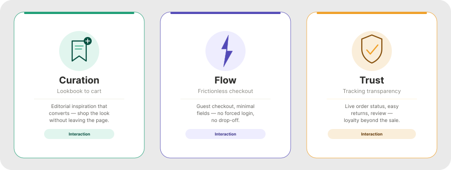
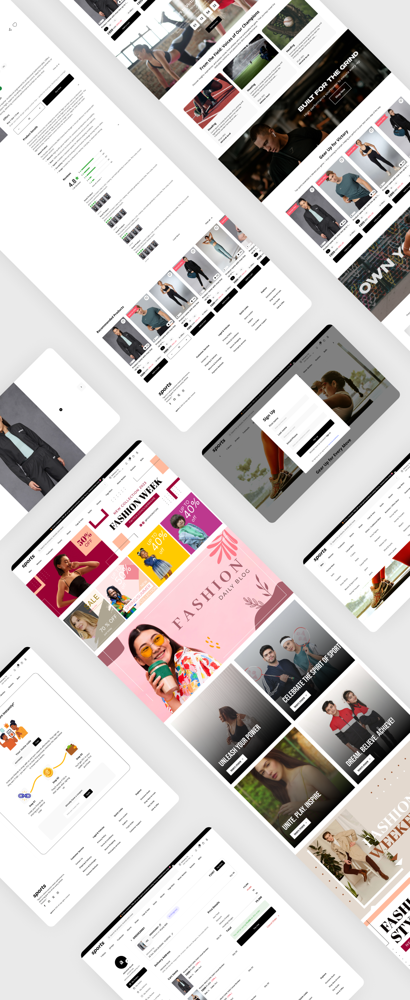
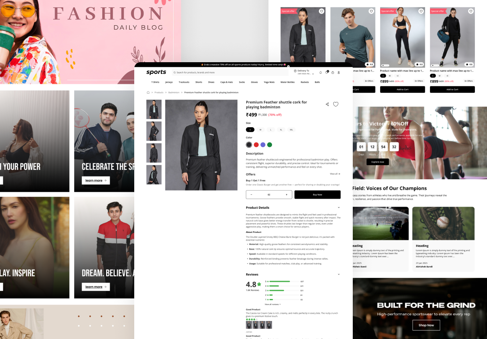
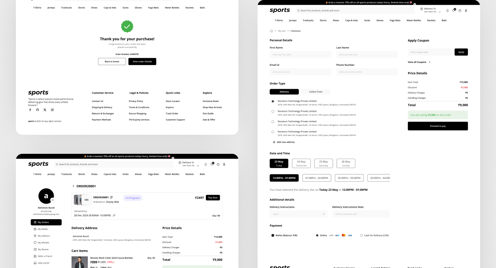
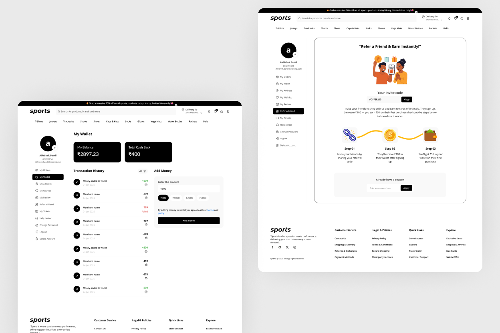

Fashion Theme
End-to-End E-commerce Experience — bridging the gap between editorial inspiration and seamless checkout.

Role
Product Designer
Timeline
Nov – Dec 2025
Tools
Figma, FigJam
Platform
Web & Mobile
My Contribution
Roles & Responsibilities
Designed an end-to-end responsive web e-commerce experience for a fashion platform — from editorial discovery through to post-checkout engagement — with a focus on bridging the gap between high-quality visual storytelling and frictionless conversion.
01
Empathize
Understanding the friction in online fashion retail
Fashion shoppers often face a "discovery gap." While they enjoy browsing high-quality editorial content, the transition from "inspiration" to "cart" is often clunky — breaking the mood that drove intent in the first place.
- The "Look" Problem: Users see a styled outfit but struggle to find the individual components without navigating through multiple categories — losing momentum before they even reach a product page.
- The Confidence Gap: A lack of clear sizing information and post-checkout transparency leads to cart abandonment at the point where intent is highest.
02
Define
Framing the problem statement
"How might we create a visually driven, high-performance fashion platform that allows users to move effortlessly from discovery to checkout while maintaining a premium brand feel?"
Three key pillars shaped every design decision that followed:
Curation
High-resolution imagery and "Shop the Look" features that let users move from editorial inspiration directly to individual product pages.
Streamlined Flow
Minimising friction in the login and guest checkout paths so high-intent users are never blocked at the point of purchase.
Post-Purchase Trust
Redefining the "My Orders" and tracking UI to build long-term loyalty beyond the moment of sale.

03
Ideate
The "Style-First" Information Architecture
Rather than a standard category-grid approach, the information architecture was designed around the way fashion shoppers actually browse — mood first, product second.
| Feature | Logic | UX Benefit |
|---|---|---|
| Editorial Feed | Large-scale hero imagery as the primary entry point | Captures attention and sets the brand mood immediately — before any product grid. |
| Quick-Add Shop | "Add to Cart" directly from the category view | Reduces clicks for returning users who know what they want and don't need to visit the product page. |
| User Engagement | Integrated Account & Order Tracking | Reduces post-purchase anxiety and encourages repeat visits through visible order status. |
04
Design
Wireframe, Design & Prototype
Designed to be non-intrusive. A "Soft Sign-In" approach was implemented where users can browse freely and build a cart before being prompted to create an account — removing the gatekeeping that causes early drop-off in fashion retail.

- The Grid: A minimalist layout that lets the product photography breathe — no visual clutter competing with the imagery.
- Async Filtering: Recognising that fashion shoppers value speed, an asynchronous filtering engine was designed. Users can toggle size availability, colorways, and budget ranges with immediate visual feedback — no page reloads.

A linear, three-step process: Shipping → Payment → Review. By removing the header and footer navigation during this phase, all potential "leakage points" where users might navigate away from the purchase were eliminated — keeping focus entirely on completing the transaction.

- Real-time tracking status — visible at every stage of fulfillment.
- Digital invoicing — detailed, downloadable receipts accessible from the order dashboard.
- One-click return / refund flow — ensuring the brand's premium service extends into the post-delivery phase, not just the purchase moment.

05
Next Phase
Planned future iterations
To further elevate the brand experience, the next development sprint will focus on complex fulfillment scenarios and deeper user personalization.